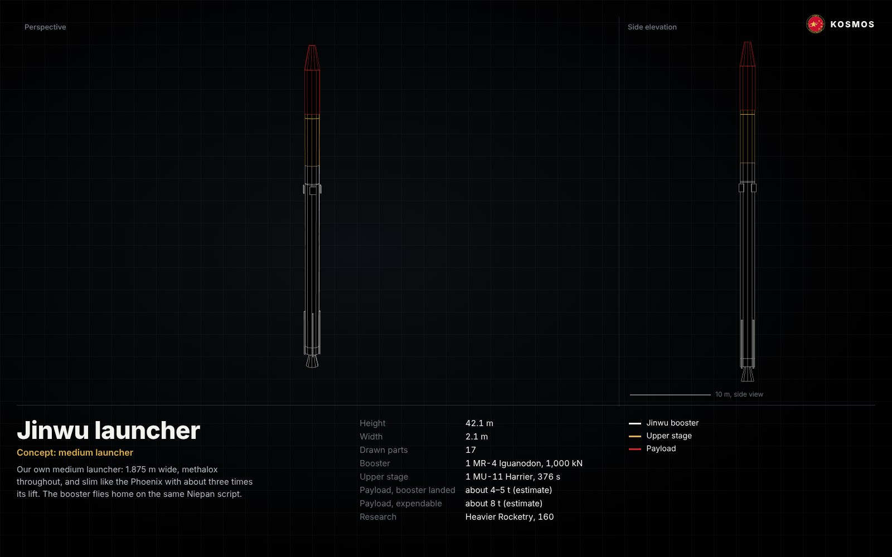
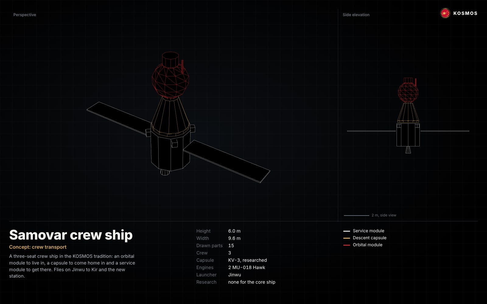
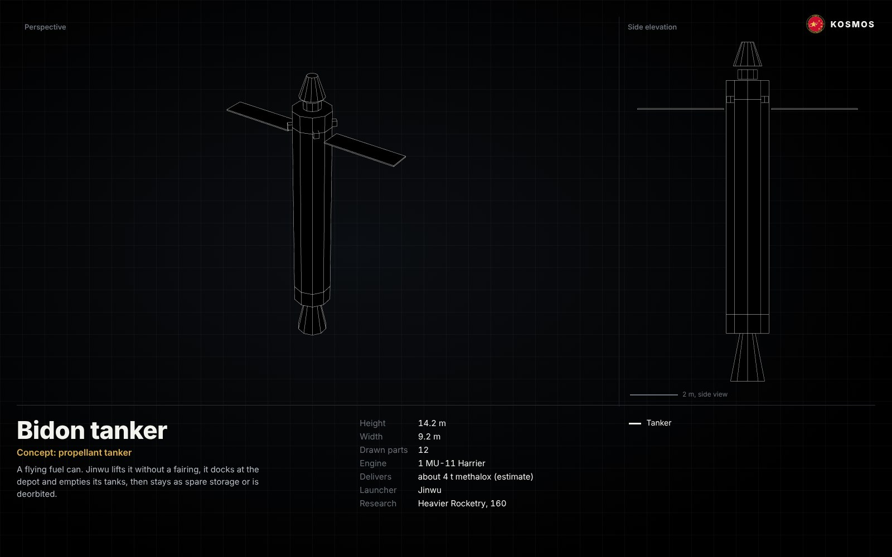
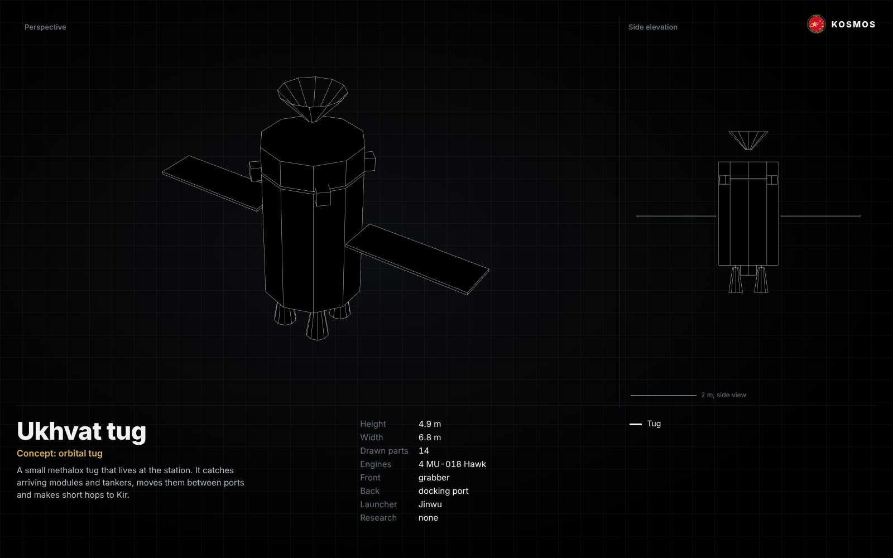
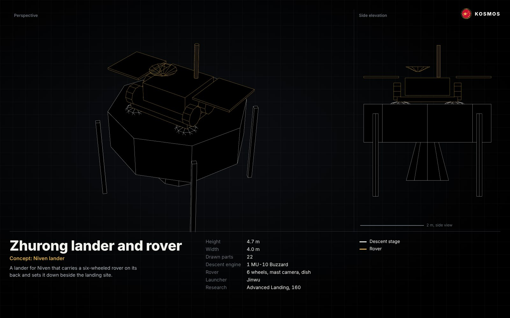
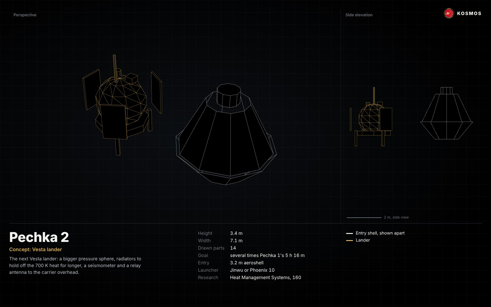
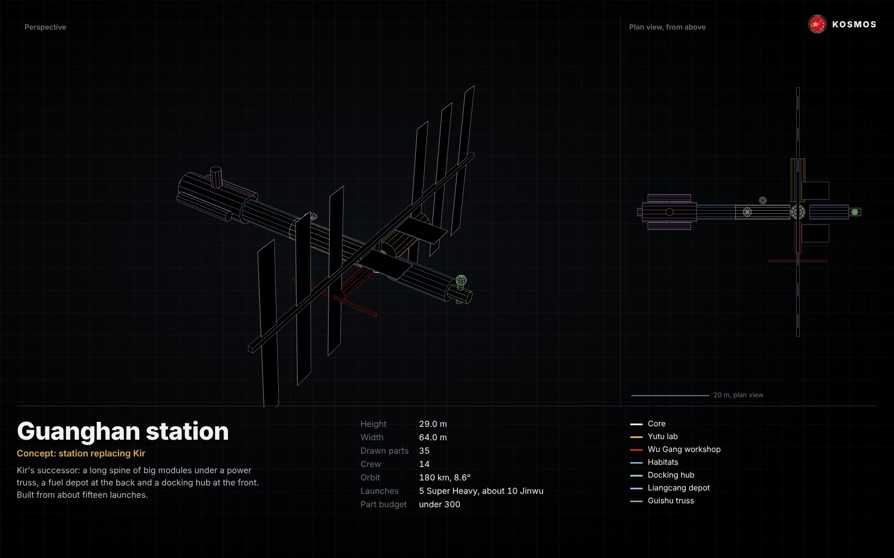

Design bureau
Concepts by the Lieutenant for the Director, 8 November 2026. None of these has flown; payloads are rocket-equation estimates to check in the VAB.
What the hangar holds, what to call things, and seven KOSMOS designs to build next, from a medium launcher to a station that replaces Kir.
Naming
The program already had a pattern. This writes it down so every new vehicle has a place.
| What | Named for | Names |
|---|---|---|
| Rockets, stages, flight software | Fire birds of myth | Phoenix, Bifang, Niepan, Jingwei, and now Jinwu |
| Spacecraft and hardware | Hearth and kitchen | Pechka, the Kettle, the Hearth Pad, and now Samovar, Bidon and Ukhvat |
| Stations | The moon palace of the Chang'e story | Guanghan, with Yutu, Wu Gang and Guishu |
| Mission directives | Chinese programme names | Tianwen, Chang'e, Zhurong |
No KOSMOS launcher borrows the name of a real rocket.
What the hangar holds
The mod pack has 2,154 parts that can be researched. 1,472 of them are already unlocked in the career save of 6 November.
| Mod | Unlocked | What it gives KOSMOS |
|---|---|---|
| Bluedog Design Bureau | 1,070 of 1,320 | A whole history kit: Skylab workshop parts, Agena and Centaur stages, Gemini and Apollo hardware, Pioneer, Mariner and Viking probe parts, large solar arrays and station trusses |
| Stock and Making History | 257 of 467 | The core kit, including the KV-3 capsule and the 1.875 m tank range Jinwu uses |
| ReStock+ | 32 of 56 | 1.875 m reaction wheels, service bays and adapters; 3.75 m hardware later |
| Cryo Engines and Cryo Tanks | 10 of 32 | Our methalox family: Compsognathus, Hawk, Buzzard, Deinonychus now; Iguanodon and Harrier one node away |
| Kerbal Reusability Expansion | 10 of 30 | Landing legs, grid fins and cold-gas thrusters for boosters |
| HullCam, kOS, MechJeb | 28 of 30 | Cameras, flight computers and autopilots |
| Far Future Technologies, Kerbal Atomics, Heat Control, SystemHeat | 0 of 87 | Nuclear and fusion engines and big radiators, deep in the tree |
| Tundra Exploration, Starship Expansion | 48 of 100 | Copies of a capitalist company's rockets. Left out of KOSMOS designs by order of the Director |
The designs
Each print shows a perspective and a scale view, coloured by stage or module. Every design can also be turned in 3D on the Hardware page.
Jinwu launcher
金乌, the three-legged golden crow that carries the sun across the sky.


Our own medium launcher, between the Phoenix 10 and the Super Heavy. It keeps the Phoenix's slim build at 1.875 m wide and about 42 m tall, burns methalox in both stages, and lands its booster with the same Niepan script. One large engine underneath keeps the base clean and the landing burn simple.
- Booster
- one MR-4 Iguanodon, 1,000 kN, methalox
- Upper stage
- one MU-11 Harrier, 376 s in vacuum
- Payload with the booster landed
- about 4–5 t (rocket-equation estimate)
- Payload expendable
- about 8 t (estimate)
- Research needed
- Heavier Rocketry, 160 science, open now
Carries Samovar, Bidon tankers, Ukhvat and every Guanghan piece narrower than 1.875 m. Turn it in 3D.
Samovar crew ship
A samovar keeps the tea hot for everyone at the table.


A three-seat crew ship in three parts: a round orbital module to live and work in, a KV-3 capsule that brings the crew home, and a service module with two Hawk engines and a pair of solar wings. The capsule is stock hardware already researched.
- Crew
- 3
- Capsule
- KV-3 'Pomegranate', researched
- Engines
- two MU-018 Hawk, researched
- Launcher
- Jinwu
- Research needed
- none for the basic ship
Rotates crews to Kir now, and to Guanghan once it is built. Turn it in 3D.
Bidon tanker
A bidon is the tall steel churn milk is carried in.


A flying fuel can. Jinwu lifts it without a fairing; it docks nose-first to the depot, pumps its methalox across and then stays as spare storage or is deorbited. Flown often, it keeps Kir and later Guanghan topped up.
- Engine
- one MU-11 Harrier
- Delivers
- about 4 t of methalox per flight (estimate)
- Launcher
- Jinwu
- Research needed
- Heavier Rocketry, 160
The depot is what lets planetary ships leave Gael full. Turn it in 3D.
Ukhvat tug
An ukhvat is the long fork used to move pots in and out of a pechka.


A small methalox tug that lives at the station. A grabber on the nose catches modules and spent tankers; four Hawk engines move them between ports, and it can hop to Kir and back to carry Fuel Module 1 across at handover.
- Engines
- four MU-018 Hawk
- Front
- grabber
- Back
- docking port
- Launcher
- Jinwu
- Research needed
- none
Saves every module from needing its own engines and docking flight. Turn it in 3D.
Zhurong lander and rover
Zhurong, the fire god of the south.


A lander for Niven with a six-wheeled rover riding on its back. Four tanks around one Buzzard engine bring it down on four wide legs; the rover drives off the deck with a mast camera, a dish and two solar wings.
- Descent engine
- one MU-10 Buzzard, researched
- Rover
- six wheels, mast camera, dish, solar wings
- Launcher
- Jinwu
- Research needed
- Advanced Landing, 160, for sturdier legs
The first wheels on another planet. Turn it in 3D.
Pechka 2
The stove, made tougher.


The next Vesta lander. A larger pressure sphere, three radiator fins to hold off 700 K for longer, crush-pad legs, a seismometer next to the barometer and thermometer, and a relay antenna to the carrier overhead. It enters in a 3.2 m aeroshell, drawn here beside the lander.
- Goal
- several times Pechka 1's 5 h 16 m on the surface
- Entry
- 3.2 m aeroshell and parachutes
- Launcher
- Jinwu, or Phoenix 10 with the Bifang stage
- Research needed
- Heat Management Systems, 160
Turns a first landing into a working surface station. Turn it in 3D.
Guanghan station
广寒宫, the moon palace in the story of Chang'e.


Kir's successor, built large because the launch cadence can carry it. A spine of big modules runs fore and aft: the Guanghan core and its six-port node, two crew habitats, the Liangcang depot at the back and a docking hub at the front. Across it sits the Guishu truss, named for the osmanthus tree on the moon, carrying twelve 14 m solar wings. Yutu, the jade rabbit, is the laboratory; Wu Gang, who chops the tree forever, is the workshop with the station arm.
- Crew
- 14
- Orbit
- 180 km, 8.6°
- Launches
- 5 Super Heavy, about 10 Jinwu
- Depot
- methalox, plus hydrogen for Bifang-class stages
- Part budget
- under 300, against Kir's 374
Full launch sequence and the Kir handover are on the Future page. Turn it in 3D.
What to do next
Research Heavier Rocketry
160 science, open now. It unlocks Iguanodon and Harrier, which Jinwu, Bidon and the next tankers all need.
Build and fly Jinwu
Test the booster landing with the Niepan script before the first payload, the way the Phoenix 10 was proven.
Win the refuelling race at Kir
Dock Fuel Module 1, then fill it from the first Bidon. This comes first, whatever else slips.
Fly Samovar
First crew rotation on our own ship, to Kir.
Research Large Volume Containment and fly the Super Heavy
Then the Guanghan core flies, and the station campaign starts.
Pechka 2 and Zhurong in the next windows
Heat Management Systems and Advanced Landing, 160 each, then a longer stay on Vesta and wheels on Niven.